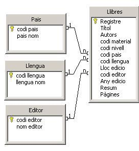
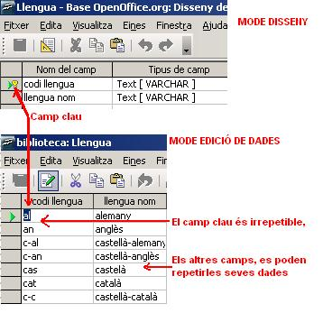
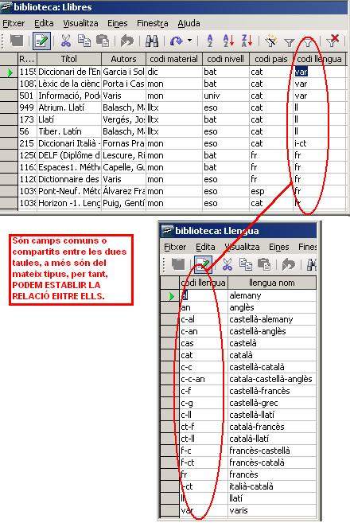

Aquest és un dels apartats més complexes, costa una mica entendre la filosofia de treball de les Bases de Dades relacionals, però si hi pareu atenció, us en sortireu. Anem a explicar-ho a poc a poc.
Bé, abans de posar-nos a fer les relacions, caldrà puntualitzar alguns altres temes previs per evitar errades:
Les relacions poden ser dels tres tipus següents:
Per poder explicar aquests conceptes posarem un exemple de la nostra base de dades Biblioteca, i més concretament la relació entre les taules: Llibres i Llengua. En la imatge següent es poden veure unes quantes relacions ja creades:

Les relacions entre les taules dependran del raonament previ
sobre la informació. Així, segons això, obtindrem unes modalitats o
d'altres de relacions.
Fem els següents raonaments per entendre les relacions entre les dues taules de l'exemple:
Ara que ja sabem els tipus de relacions existents podem començar a fer-les, però abans de posar-nos mans a l'obra, caldrà puntualitzar uns requisits previs.
Enllaçant amb les explicacions del passat mòdul 1, cal pensar que en les taules hi ha d'haver un camp irrepetible que identifiqui cada registre dins de la taula corresponent. Així, en una taula de persones, el DNI podria ser un camp irrepetible, (o el camp Id_alumne en el nostre exemple de la taula Alumnes) al qual se li dóna el nom de camp clau.
En el cas de l'exemple de la Biblioteca, tenim uns camps codi que tenen
per funció identificar aquest registre i diferenciar-lo de la resta.
Observeu aquesta imatge:

En ella podeu veure la taula Llengua des del mode disseny (part
superior de la imatge) i des del mode edició de dades (part inferior).
Al disseny veieu el dibuix de la clau, que indica que aquest camp té la
categoria de camp irrepetible o clau.
Per poder fer les relacions, els camps han de tenir el mateix tipus de dades i han de ser del mateix tipus. És a dir, no es pot relacionar un camp tipus text amb un altre de numèric, doncs els continguts de cadascun d'ells són diferents. És un aspecte importanta tenir en compte:
Per tant, si tenim presents totes aquestes premises prèvies ja ens podem posar mans a l'obra i crear les relacions en el nostre exemple.
Com que la teoria ja s'ha vist en les pàgines precedents i ara ho farem amb el programa Open Base.org.
Es tracta de posar en pràctica la mecànica per crear les relacions. Ara caldrà obrir la Base de Dades Biblioteca que anem utilitzant d'exemple i inciarem la relació entre dues taules que són: Llibres i Llengua.
Per iniciar el procés de creació, primer cal fer un raonament previ i mirar si totes les condicions necessàries estan correctes.
Així, pensem:
-Tenen un camp comú totes dues taules per poder fer la relació?
-Sí, efectivament, el tenen, aquest camp és el que té per nom codi llengua. No cal que el nom sigui el mateix, el que sí és imprescindible és que les dades siguin les mateixes (en aquest cas concret s'ha fet coincidir deliberadament).
Mireu la següent imatge on es veuen les dues taules amb els seus continguts respectius:

Si ens fixem en la figura anterior, podem veure que en la taula Llengua només cal donar un sol cop d'alta les dades de cadascuna de les llengües, i les escriurem un sol cop. Així, la llengua var, fr, cat, (Vàries, Francès, Català, etc.) només estarà un cop incorporada en aquesta taula, però moltes vegades en l'altra (Llibres).
Ara pensem què passarà amb el codi “cat” de llengua en la taula Llibres. Estarà només un cop, o es repetirà alguna vegada aquest codi cat de llengua?
Si pensem una mica, aquest “cat” es repetirà, només cal que ens regalin un altre llibre en llengua catalana, i immediatament en la taula Llibres haurem de donar-lo d'alta, i per tant, tindrem dos cops la refència a aquesta llengua. Per tant, i com a resum, la taula Llengua serà el costat 1 de la relació i la taula Llibres serà el costat n o varis de la relació.
Tenim, doncs una relació 1 a n entre aquestes dues taules, que amb un raonament acuarat, podríem dir:
Això ens dóna el tipus de relació esmentat.
Ara la teoria ja la tenim. Passeu a la següent pràctica i ho fareu.

|
|

|
|